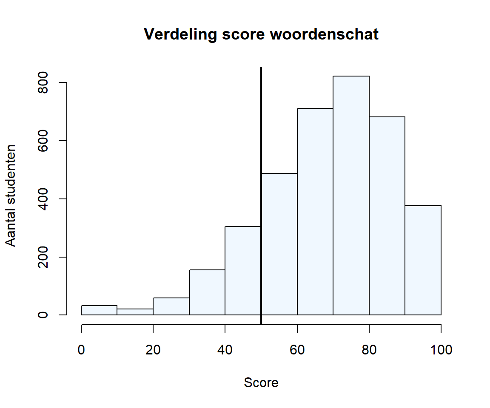
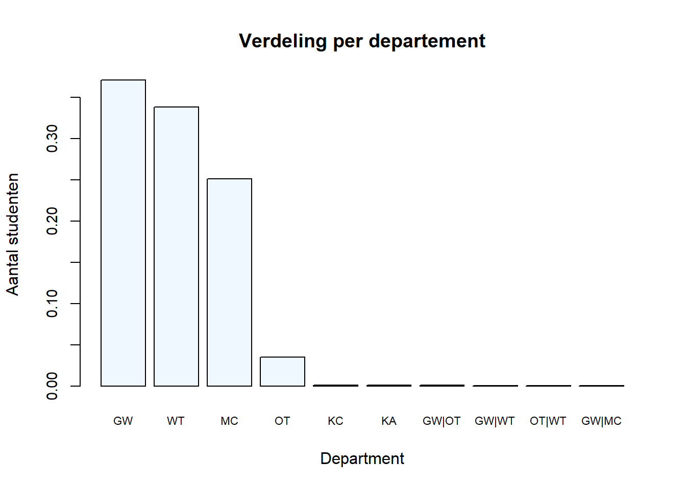
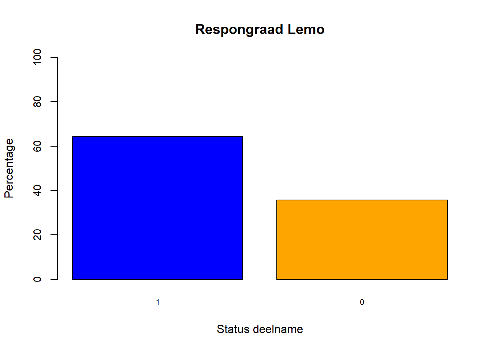

Workshop 1 Visualizing Descriptive analyses for beginners
1.1 Load data
The data file contains the results of +- 4000 unique students who participated in the begin assessment environment at AP, called AP-Vaardig. Students could participate in assessments on
- Language skills
- Mathematics
- Study motivation
- Learning strategy use
In addition to these core-variables we obtained some background variables such as Department, Study program (Opleiding) and Program type (Professionele bachelor or graduaat). We also included students’ average score on their exams in January (GPA; Grade Point Average). All variable names are in Dutch.
There are multiple ways of importing data files in RStudio. The most straightforward is using the user interface in RStudio. You can access this via Environment > Import Dataset > From Excel…. If you are using RStudio for the first time, the program might ask you to download and install some packages. Just agree to installing and let the installation finish.
The data file you have to import can be found in the chat or on this location:
https://github.com/ddhaese/Project_PHD_DAY/tree/main/datSave the code in your project folder for convenience.
You’ll notice that RStudio wrote some code in your console. This is the code the Import Dataset wizard used to import the data file. Y can use this code to import the data in RStudio in the future, instead of using the import wizard. You can also amend this code later, for instance by adding code to define ‘NA’-values:
library(readxl)
sem_1_anon <- read_excel("dat/sem_1_anon.xlsx")
View(sem_1_anon)The data is saved in an R-object called sem_1_anon en if you look under the ‘Environment’ tab, you should see this object appear. The last line of the code above opens your data file in the RStudio viewer. For data files from a small to moderate size this is a convenient way to explore your data. You can also retrieve the ‘data type’ RStudio assigned to each variable by hovering over the variable name/column name. This might help you explain why RStudio is not willing to produce a certain visual (i.e. because it interpreted a numerical variable as a factor (ordinal variable)). You can get similar information by clicking open the object in the Environment-tab. This is especially convenient for a large data set if you want to look up how a certain variable in your set is labeled. A third way to consult the content of any object in R is to use thestr function. Copy the code below in your console and you should see a long list of all variables and their data types. You also get an indication of the length of the columns and a sample with the values of the first couple of rows. Finally, you can see that this object is a tibble, a table derived from a data.frame. (for those who are interested: a tibble is a format that belongs to the tidyverse, a cluster of integrated R-packages aimed at tidying, wrangling, visualizing and presenting data: https://www.tidyverse.org/).
# In de console:
str(sem_1_anon)## tibble [3,811 x 71] (S3: tbl_df/tbl/data.frame)
## $ ID : num [1:3811] 1 2 3 4 5 6 7 8 9 10 ...
## $ Inschrijving : chr [1:3811] "Nee" "Nee" "Nee" "Nee" ...
## $ Generatiestudent : chr [1:3811] "Nee" "Nee" "Nee" "Nee" ...
## $ Departement : chr [1:3811] "MC" "MC" "MC" "MC" ...
## $ Opleiding : chr [1:3811] "Bachelor in het bedrijfsmanagement (rechtspraktijk)" "Bachelor in het office management" "Bachelor in het communicatiemanagement" "Bachelor in het office management" ...
## $ Opleidingstype : chr [1:3811] "Bachelor" "Bachelor" "Bachelor" "Bachelor" ...
## $ Woordenschat : num [1:3811] 70 65 60 60 45 70 55 50 65 95 ...
## $ Lidwoorden : num [1:3811] NA 80 76 62 66 NA 78 NA 92 82 ...
## $ Werkwoordspelling : num [1:3811] NA 73.3 60 73.3 73.3 ...
## $ Algemene_spelling : num [1:3811] NA 52.5 77.5 60 55 NA 65 NA 82.5 NA ...
## $ Woordvorming : num [1:3811] NA 34 36 50 14 NA 32 NA 28 46 ...
## $ Tekstanalyse : num [1:3811] NA 70 80 65 70 NA 65 NA NA NA ...
## $ Correcte_taal : num [1:3811] NA 60.9 69.6 78.3 65.2 ...
## $ Email : num [1:3811] NA 60 90 50 40 NA 30 NA NA NA ...
...Let’s switch to our newly generated example Rmd-file. Delete all example code (or start below the code if you want to retain it for further inspection later on). For those who want to delete: everything below ## R Markdown is ok. Next, make a new title: ‘## Loading the data’ followed by an empty line (## tells R-Markdown to make a title at the second level). Below the title, insert a code chunk. Click insert (somewhere on the top right of the window where you can view your Rmd-file). In the drop-down menu, select the code chunk you want to insert: R-code in this case (actually two separate code chunks :) ). Paste the code from console in the chunks according to the example bellow:
```{r setup, include=FALSE}
library(readxl)
``````{r load-data}
sem_1_anon <- read_excel("dat/sem_1_anon.xlsx")
View(sem_1_anon)
```Pro tip 1: It is convenient to start each new document with a code chunk in which you load not only your data, but also all the packages you will use in your analyses. I personally have a list of frequently used packages I copy/paste in this chunk across all my projects.
Pro tip 2: You can see the idea of a ‘notebook’ taking shape here: within the R-code chunks you execute your analyses or create your visualizations. Between the chunks you can write down interpretations, intriguing results or questions for your supervisor. You can easily structure your notebook by adding titles (remember the ## title, followed by an empty line)
you can ‘print’ the entire document by clicking the ‘knit’ button in the menu bar in the top left corner. This will produce a html-page including all calculations and visuals, but also the text and titles in between (so the entire notebook)
Now, let’s turn to visualizing our data (finally).
1.2 Exploring the distribution of the variable ‘Woordenschat’ (Vocabulary) through a histogram
As stated above: our dataset is composed of various test results and some background variables in the columns and participating students as rows. Let’s start exploring our data by visualizing some of the variables (exploratory data visualization). To get started we have to load the required packages. In R this is a two step procedure: First, you have to download the packages to your computer (via install.packages). Second you have to activate the packages in R (via library). You have to download the packages only once, but have to activate them for each session.
# In de console (enkel eenmalig bij eerste gebruik):
install.packages(c("data.table", "magrittr", "tidyverse"))Pro tip 3: We prefer not to incorporate our ‘install.packages’ commands in our Rmd-file. Otherwise R would download these packages every time we would run our code. That would slow down the computing time significantly.
You can paste the code bellow after previous library-statements.
library(readxl)
library(data.table)
library(magrittr)
library(tidyverse)Pro tip 4: I would add these to the first ‘load’ chunk at the top of the Rmd-file.
We will now examine the distribution of the variable woordenschat. Observe how the code is constructed below:
- We define which colors we want to use by identifying a palette. So
col = 1meansaliceblueandcol = 2indicatesblack. We can use this palette throughout the whole document if are looking for consistency in our visualizations. We could also add more colors to this list (e.g. all branding colors from our organization). - We select the variable from the
sem_1_anondataset by stating the dataset, followed by$and the variable name - We use a special operator mark from the package
magrittr(%>%) to pass on the result to thehist-function (this is called method chaining of piping). histis the code that creates the actual histogram.- We define a title and names for the X and Y-axis.
- To make the message in our graph easily understandable, we add a vertical line at the 50% mark, using the function
abline.
palette(c("aliceblue", "black"))
# Palette defines a range of colours. you can refer to these colors by using the 'order number' in the palette statement
sem_1_anon$Woordenschat %>%
hist(main = "Verdeling score woordenschat",
xlab = "Score", ylab = "Aantal studenten",
col = 1)
abline(v = 50, lwd = 2, col = 2)
Pro tip 5: If you are unsure about what specific code functions mean or do, you can consult the help function. there are 3 common ways of doing this: (1) type ‘?’ directly followed by the function (e.g. ?hist) in the console. (2) In the bottom right of your RStudio dashboard, you can see a tab called ‘Help’. Click it and write the name of the function in the search field on the top right. (3) Google the name of the function + R an you will probably come across more information than you need (Yes, R is tinkering).
1.3 Histogram exercises
- Write down an observation regarding the histogram underneath the figure in your Rmd file.
- Consult the help file for histogram. Try changing the width of the rectangles from 10 to 5, by adapting the ‘breaks’ in the histogram. (Copy the code to a new chunk before you start tinkering, otherwise you will lose your working code)
- Make the current histogram more ‘disco’ by adding 5 more colors based on name or HEX-code to the palette. (this will help: http://www.sthda.com/english/wiki/colors-in-r). To use the succession of colors instead of a single color, use
col = 1:7(: means from 1 until 7) - Make a similar histogram on the variable ‘vergelijkingen1’
- Distinguish the created histograms by adding a sub-title above each histogram containing the variable-name.
- Can you add a red, striped vertical line where the mean in the histogram of ‘Vergelijkingen1’ is situated? (this will help: http://www.sthda.com/english/wiki/abline-r-function-an-easy-way-to-add-straight-lines-to-a-plot-using-r-software)
- Change the histogram for Vergelijkingen1 to a ‘density plot’ (check the help function for hist and look for
freq)
1.4 Exploring the distribution of a Departement using barplots
We will now explore how student-participation in AP-Vaardig is distributed across departement in AP. For those who are really curious about what the codes mean:
- GW = Gezondheid en Welzijn
- MC = Management en Communicatie
- OT = Onderwijs en Training
- WT = Wetenschap en Techniek
- KC = Koninklijk Conservatorium
- KA = Koninklijke Academie
The variable Department is a categorical variable so we are switching from a histogram to a bar plot. Observe how the code is constructed below:
- We select the variable from
sem_1_anonby stating the dataset, followed by ‘$’ and the variable name - We use a special operator mark from the package
magrittr(%>%) to pass on the result to thetable-function (this is called method chaining of piping) tablecounts the number of rows pertaining to a specific value of the categorical variableDepartementsortorganizes this count ascending.revswitches the order to descendingbarplotcreates the actual bar plot.
sem_1_anon$Departement %>%
table%>%
prop.table%>%
sort %>%
rev %>%
barplot(main = "Verdeling per departement",
xlab = "Department", ylab = "Aantal studenten",
cex.names = .7, cex.axis = .9, col = 1)
We can observe that some of the departments are barely represented in our data file. If we would continue with analyses where Departement is included as a predictor, this would hamper our power. So based on our visualizations it would be better to remove these underrepresented departments.
We can do this by using the following steps:
- We convert our Tibble to a
data.tableobject using thesetDTfunction. - We count the number of students per departement using the function
.N) per departement. - We selecteren those departments containing more than 5 participating students and we save the results in a new object called
dep_top.If needed we can use the objectdep_topto filter out our dataset.
sem_1_anon <- setDT(sem_1_anon)
dep_top <- sem_1_anon[, .N, Departement][N > 5, Departement]
dep_top## [1] "MC" "WT" "GW" "OT"1.5 Barplot exercises
- Change the bar plot so it will plot the ‘relative frequencies’. You can do this by adding
prop.tableto an object that is the result of atablefunction. Can you do this using the pipes? - Change the relative bar plot to a bar plot containing percentages by adding another line in the pipe:
multiply_by (100) %>%. - Make a bar plot for the variable ‘Opleidingstype’.
- Make a bar plot for the variable
opleiding. See how difficult it is to read these long names. Now flip the bar plot by adding horiz = TRUE to the functionbarplot(don’t forget your comma!). Now that’s easier to read :) - Make a bar plot on the variable
Generatiestudent. Should we keep students who do not have the status of ‘generatiestudenten’ in our sample? - Let’s say you have to present your data to the teachers of the department MC. You want their data to stand out in the bar plot. How would you do that, using colors? Implement in a new graph.
- Let’s say that last year all departments promised that ‘at least’ 20% of their students would participate in AP-Vaardig. How would you make this clear in the bar plot? How could you use
ablineto accomplish this?
Pro Tip 6: sometimes R interprets a variable as ‘numerical’ while it is in fact a categorical variable. For instance, in our data set the variable Lemo_T indicates whether or not a student participated the Lemo questionnaire. If we want to explore the response rate using a bar plot we need tot convert this variable from type ‘numeric’ to type ‘Character’ before creating the bar plot. The code bellow demonstrates how
sem_1_anon$Lemo_T <- as.character(sem_1_anon$Lemo_T)
sem_1_anon$Lemo_T %>%
table %>%
prop.table %>%
multiply_by(100) %>%
sort %>%
rev %>%
barplot(main = "Respongraad Lemo",
xlab = "Status deelname", ylab = "Percentage", ylim=c(0,100),
cex.names = .7, cex.axis = .9, col = c("blue", "Orange"))
Pro Tip 7: I wanted the colors in this plot to support my message. So I aimed at giving participation a more positive color and non-participation a more negative one. We tend to use green and red to indicate positive and negative. However, for color blind people this is not optimal, as they have difficulty discerning these colors. Therefore it is advised (by color experts) to switch to blue and orange as alternatives.
1.6 Expansion: Grouped & stacked barplots
Sometimes you want to compare a distribution across two categorical variables. For instance, we could be wondering whether or not participation in Lemo differs across Departments. We could investigate this using a grouped bar plot and/or a stacked bar plot. Construction of this bar plot is quite similar to a simple bar plot:
- Make a crosstable of the two variables using the function
table - (If needed, make a proportional table or a table containing percentages)
- Sort if needed
- Use this output as an input for the function
barplot
We therefore do not go into detail on these variations. However, take notice of the following:
- We use a filtered version of our dataset containing only Departments with sufficient participants. We run the function
filterfrom the dplyr-package and use the objectdep_topwe created before to filter out the appropriate departments.
- we inserted a new function called
legendto display a legend in our graph. - the fact that how you organize your initial table affects which variable is used as grouping variable. This in turn affects the message your table is displaying and its readability.
- the argument
besidesdecides whether the bar pot is grouped (besides = TRUE) or stacked (besides = FALSE). - you can see I really like shades of blue as a base color for my graphs.
1.6.1 Grouped barplot with department as grouping variable
palette(c("dodgerblue4", "lightblue", "blue", "cadetblue"))
dep_top_alt <- sem_1_anon%>%
filter(Departement %in% dep_top)
dep_Lemo <- table (dep_top_alt$Departement, dep_top_alt$Lemo_T)
dep_Lemo_2 <- prop.table(dep_Lemo)*100
barplot(dep_Lemo_2,
col = 1:4, beside = TRUE, ylim=c(0,50))
legend("topright", legend = rownames(dep_Lemo_2),
fill = 1:4, box.lty = 0, cex = 0.8)1.6.2 Stacked barplot with participation in Lemo as grouping variable
Lemo_dep <- table (dep_top_alt$Lemo_T, dep_top_alt$Departement)
Lemo_dep_2 <- prop.table(Lemo_dep)*100
barplot(Lemo_dep_2,
col = c(1, 4), beside = FALSE, ylim=c(0,50))
legend("top", legend = rownames(Lemo_dep_2),
fill = c(1,4), box.lty = 0, cex = 0.8)If you want to exercise this, try making a grouped bar pot for Lemo Participation and Opleidingstype. and answer the following question: AP-vaardig was originally intended as an assessment tool for ‘Graduaten’. ‘Bachelor students’ were allowed, but not obliged to take part in the tool. So there should be mainly students from Graduaten in the sample. Is this true?
1.7 Boxplots
1.7.1 Boxplot of various numerical scales
We familiarized ourselves with the distribution of the scores for a single scale ‘Woordenschat’ through a histogram. we can compare descriptive statistics for various numerical variables (with a similar scale) using boxplots.
Observe the steps in the code below:
- If all scales in your data file are numeric, you can just input the data file as source and R does the rest. Therefore we used the function
selectfrom dplyr to select all scales regarding language skills in our data set. - Because our variable names are long we adjusted the margins in our plot using the function
par. The numbers in between brackets define the margins for respectively: bottom, left, top, right in inches. - the function
boxplotcreates the boxplot for the data frame “scales”. lastilts the orientation of the labels for readability.- If you wanted a boxplot for a single scale you could just insert
datafile$variablename.
scales<-sem_1_anon %>%
select(Woordenschat:Email)
par(mar=c(10,5,1,1))
boxplot(scales, las=2, col =1:4, main = "Verdeling scores schalen taalvaardigheid")1.7.2 Providing an indication of distribution
If you have a small sample and if it is important to emphasize distribution into more detail, you can consider adding a stripchart to your boxplot. The strip chart adds an extra layer over your boxplots containing individual data points. In large datasets like ours these points just create a large ‘blob’. To exemplify the function, we therefore selected the first 25 rows in our dataset using the function slice (again from the dplyr package) . The jitter method disperses the data a bit, so they don’t overlap with features in the boxplot. We also went with a very soft color, because we did not want to draw too much attention to the individual points.
scales<-sem_1_anon %>%
select(Woordenschat:Email) %>%
slice_head (n=25)
par(mar=c(10,5,1,1))
boxplot(scales, las=2, col =1:4, main = "Verdeling scores schalen taalvaardigheid")
stripchart(scales, las=2, vertical= TRUE, method = "jitter", pch = 19, bg=2, add = TRUE, col = "mistyrose")1.7.3 Grouped boxplots
Finally, let’s explore how the distribution of our variable ‘Woordenschat’ differs in the various departments. We know from previous analyses that not all Departments have a decent participation rate. We therefore filter adequate departments using the object dep_top which contains the names of all departments (alternatively we could just sum them up using c(“Mc3,”GW“,”WT“,”OT")). We use a ~ to instruct R to plot Woordenschat across departments. T finish it of, we constructed a horizontal line on the general median across the entire dataset, just as a point of reference for comparisons.
sem_1_anon %>%
filter(Departement %in% dep_top) %>%
boxplot(Woordenschat ~ Departement, data = .,
col = 1, pch = 19, cex = .5,
main = "Verdeling score woordenschat per departement")
abline(h = median(sem_1_anon$Woordenschat, na.rm = T), lwd = 2, col = "orange", lty=2)1.8 Exercise time
- Can you repeat the boxplots we constructed on language skills for the mathematical skills incorporated in AP-Vaardig (column Rekenen up until column Goniometrie)
- One of your colleagues has the odd hypothesis that participating in Lemo (Lemo_T) is related to differences in the variable Deductief_redeneren. Can you explore the idea by making a grouped boxplot?
Pro tip 8: In most cases you do not want readers to see your code, just your results. By adding , echo=FALSEin between the brackets and after the r at the start of each chunk, you instruct RStudio to solely print the outcome of your analyses
1.9 What’s next?
We already mentioned the tidyverse as a group of packages to tidy, wrangle and present data. Up till now we used three packages from the tidyverse: dplyr, magrittr and tibble. however, the tidyverse also includes a package for visualizing data called ggplot2. The gg stands for grammar of graphics. It has a consistent and methodical way of programming visuals, which can be daunting for beginners. However, when mastered it will give you the option of designing al your graphs to the very detail.
Mastering the basics in data visualization using just Base R will help you understand the grammar behind ggplot2. If you feel ready for the next step, ggplot2 is definitely a package to explore. The following books/resources can help you:
- http://www.cookbook-r.com/Graphs/
- https://rstudio.com/wp-content/uploads/2015/03/ggplot2-cheatsheet.pdf
- https://r4ds.had.co.nz/
- https://ggplot2-book.org/
A good start would be to try and replicate the graphs in this workshop using ggplot2.